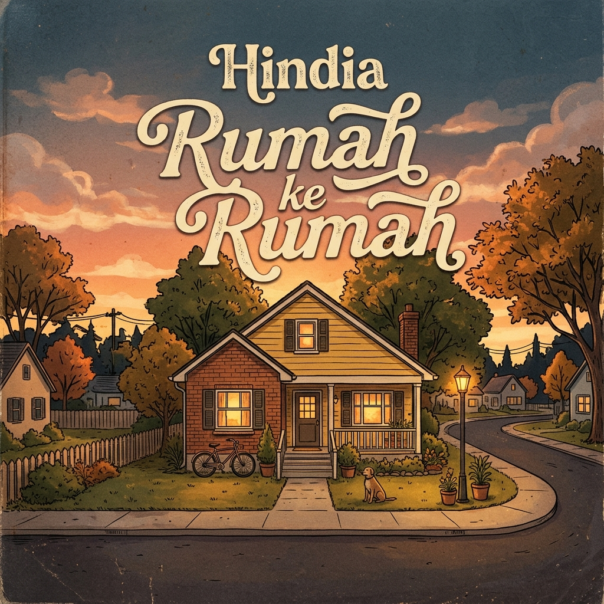
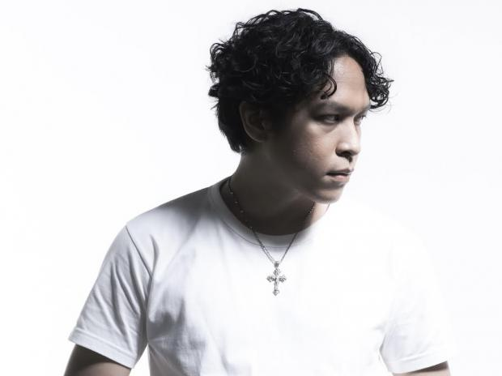

Baskara hadir sebagai salah satu narator paling jujur di lanskap musik indie Indonesia, merangkai lirik-lirik kontemplatif yang memotret keresahan, patah hati, dan perjuangan hidup sehari-hari. Dengan balutan aransemen pop-folk dan alt-pop yang hangat, musiknya terasa seperti percakapan larut malam di beranda rumah, menyuarakan kejujuran emosional tanpa sekat.
Karya-karyanya menemukan rumah yang paling tulus di hati pendengar dari Generasi Z mereka yang sedang bergelut dengan kecemasan masa muda, pencarian identitas, dan realitas dunia modern. Lewat lagu-lagu yang dekat dengan realita, Baskara berhasil menjadi suara bagi generasi yang kerap merasa lelah, menawarkan pelukan hangat melalui melodi agar mereka tahu bahwa mereka tidak sendirian di tengah riuhnya kepala.
2.5M
Followers Spotify
1.8M
Monthly Listeners
3
Official
Album